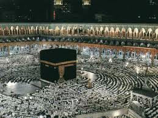
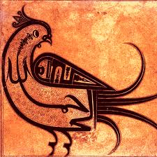

Part One: Prophet Muhammad (s.a.a.w.) Today
One in every five persons on this earth firmly believes that the Prophet Muhammad is the last Messenger of God. He was a Muslim and there are more than 1.3 billion such Muslims today. [Editor's Note: 1.6 billion as of 2010]
Not only individuals but entire countries take pride in declaring their allegiance to him. There are 54 such Muslim states today, ranging from those as large as Indonesia and Bangladesh, with populations of 200 and 125 million respectively, to those as tiny as the Maldives or Brunei with populations of 230,000 and 260,000. Even in non-Muslim countries, large Muslim populations constitute significant minorities; as much as 120 million in India and 20 million in China. Indeed, within the last half century, Islam, the religion brought by the Prophet Muhammad, has become the second largest religion in most European countries, as also in America and Canada.
Black and white, red and yellow, followers of the Prophet Muhammad come from all human races. Whether in Asia or Europe, Africa or America, in every nook and cranny of this globe, you are sure to find Muslims. They live in the most advanced, sprawling megalopolis as well as in the most primitive nomadic tent, village, hamlet, and even in the bush.
Rights of Holy Prophet Muhammad (saw) on his followers (Rights of Rasoolullah)
All Muslims of the world, no matter what their sects are, hold in common that Holy Prophet Muhammad (saw) was the last Prophet (Seal of the Prophets), and in fact, Muslims believe in divine prophecy having ended with him, just as they believe in the Oneness of Allah (Tauheed). Allah (SWT) says:
"Muhammad is not the father of any of your men, but (he is) the Messenger of Allah, and the Seal of the Prophets: and Allah has full knowledge of all things." (Noble Qur'an, 33:40)
Rights of Holy Prophet Muhammad (saw) are the most important, after the rights of Allah (SWT). There is no human who has more rights than Holy Prophet Muhammad (saw). Allah (SWT) says:"Surely We have sent you (O Muhammad) as a witness and as a bearer of good news and as a warner, That you may believe in Allah and His Messenger and may aid him and revere him; and (that) you may declare His glory, morning and evening." (Noble Qur'an, 48:8-9)
"And We have not sent you (O Muhammad) but to all the men as a bearer of good news and as a warner, but most men do not know." (Noble Qur'an, 34:28)
Tears of Rasulullah (saw): How much do you Love Rasulullah (saw)?
Suddenly, there was a person said Salaam. "May I come in?" he asked the permission to enter. But Fatimah daughter of Muhammad (saw) did not allow him to enter the room. "I'm sorry, my father is ill," said Fatimah daughter of Muhammad (saw) turned back and closed the door. Fatimah daughter of Muhammad (saw) went back to her father who had opened his eyes and asked Fatimah, "Who was he, my daughter?"
"I don't know, my father. It's the first time I'm seeing him," Fatimah daughter of Muhammad (saw) said gently.
Then, Rasulullah (saw) looked at his daughter with trembled look, as if he wanted to reminisce about every part of her daughter's face. "Know one thing! He is who erases the temporary pleasure; he is who separates the companionship in the world. He is the angel of death (Ezraeel)," said Rasulullah (saw).
Fatimah daughter of Muhammad (saw) bore the bomb of her cry. Then, Rasulullah (saw) ask his daughter to allow the angel of death (Ezraeel) to enter. The angel of death (Ezraeel) came toward him; But Rasulullah (saw) asked why Jibril (Gabriel) did not come along with him. Then, Jibril was called. Jibril was ready in the sky to welcome the soul of Habibullah and the leader of the earth.
"O Jibril, explain me about my rights in front of ALLAH (SWT)?" Rasulullah (saw) asked with a weak voice.
"The doors of sky has opened, the angels are waiting for your soul. Paradise opens widely waiting for you," Jibril said. But, in fact, those all did not make Rasulullah (saw) relieve, his eyes were still full of worry.
"You are not happy to hear this news?" asked Jibril.
"Tell me about the destiny of my people(Ummati) in future?"Rasulullah (saw) said.
"Don't worry, O Rasulullah. I heard ALLAH (SWT) told me: I make Paradise Haram (forbidden) for every one, except the people of Muhammad," Jibril said.
It became closer and closer, the time for the angel of death (Ezraeel) to do his work. Slowly, Rasulullah's soul was pulled. It was seemed that the body of Rasulullah (saw) was full of sweat; the nerves of his neck became tight.
"Jibril, how painful this Sakaratul Maut is?" Rasulullah (saw) uttered a groan slowly. Fatimah daughter of Muhammad (saw) closed her eyes, Hazrat Ali (r.a) sat beside her, bow deeply and Jibril turned his face back.
"Am I repugnant to you that you turn your face back O Jibril?" Rasulullah (saw) asked to the deliverer of Wahi. "Who is the one who could see the Habibullah in his Sakaratul Maut," Jibril said.
Not for a while, Rasulullah uttered a groan because of unbearable pain."O ALLAH (SWT), how greatest is this Sakaratul Maut. Give me all these pains, don't to my people(Ummati)." The body of Rasulullah (saw) became cold, his feet and chest did not move anymore. His lips vibrated as if he wanted to say something, Hazrat Ali (r.a) took his ear close to Rasulullah. "Uushiikum bis salati, wa maa malakat aimanuku" - "take care of the Salaat and take care of the weak people among you."
"Outside the room, there were cries shouted each other, Sahabah (Companions) held each other. Fatimah daughter of Muhammad (saw) closed her face with her hands and, again, Hazrat Ali (r.a)) took his ear close to Rasulullah's mouth which became bluish.
"Ummatii, Ummatii, Ummatii" - "My people, my people, my people." And the life of the noble prophet ended.
Could we love each other like our prophet Muhammad (saw)?
Allahuma salli ala Muhammadin wa aale Muhammad (O Allah! Bestow Peace on Muhammad and his Descendants) How deep is Rasulullah's love to us? Indeed Rasulullah (saw) really deserves best of our LOVE than everything in this world as shown in the following narration.
(7:158) [Say, O Muhammad]: 'O men! I am Allah's Messenger to you all - of Him to Whom belongs the dominion of the heavens and the earth. There is no god but He. He grants life and deals death. Have faith then, in Allah and in His Messenger, the ummi Prophet who believes in Allah and His words; and follow him so that you may be guided aright.'
 